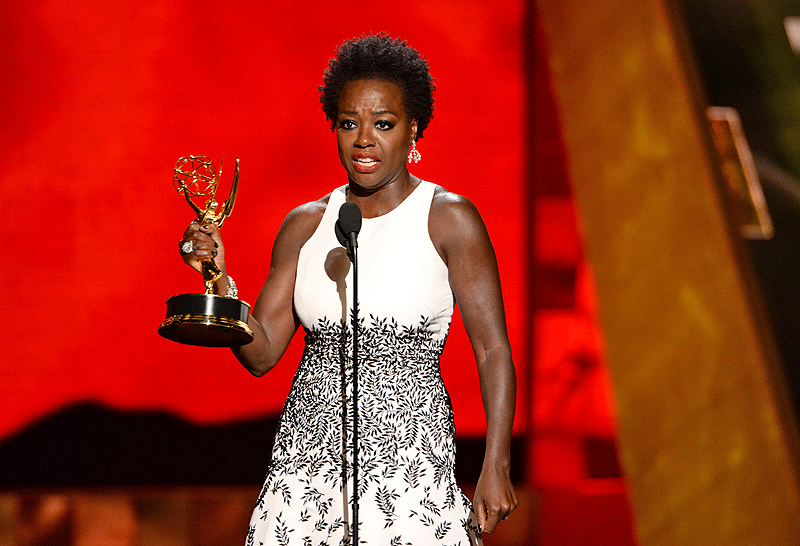
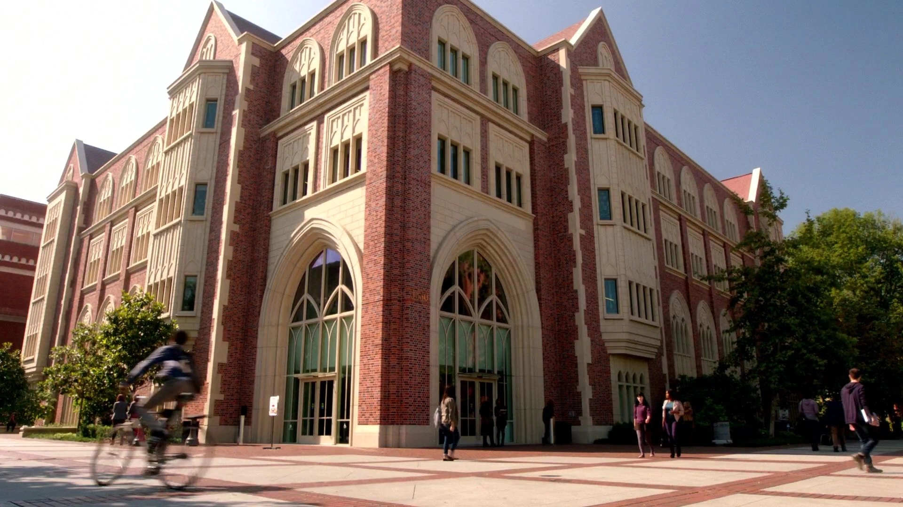
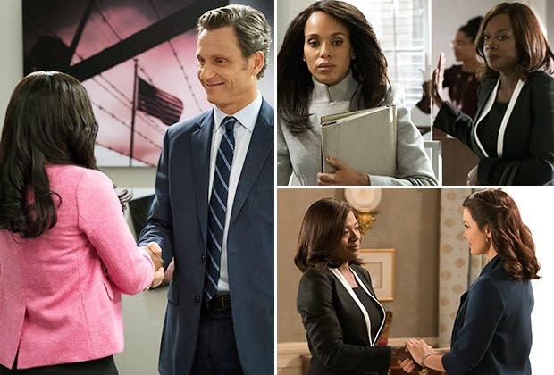

Historical Emmy Award Winner
In 2015, Viola Davis made history at Sunday night's Emmy Awards when she won for best actress in a drama for How to Get Away With Murder: It's the first time that award has gone to a black woman. She became the first African-American woman to receive an Emmy Award for Outstanding Lead Actress in a Drama Series because of her work as Law Professor Annalize Keating on this show.
"The only thing that separates women of color from everyone else is opportunity," Davis said in her acceptance speech. "You cannot win an Emmy for roles that are simply not there."
Filmed at University of Southern California
ABC’s ‘How to Get Away With Murder’ is set in Philadelphia, but like many other shows out there, its actual filming took place in an entirely different location. The show was predominantly filmed in Los Angeles, California.
“USC is the university to go to when shooting in Los Angeles,” said Jason Kaplon, location manager on How to Get Away with Murder. You may have noticed that Murder’s Middleton University looks an awful lot like USC — the Physical Education Building, Wallis Annenberg Hall, Bovard Administration Building. "The campus is beautiful, looks like the East Coast and has many different looks,” said Veronique Vowell, an ABC location manager who works with Shondaland Productions.
Epic crossover episode
In 2018, How to Get Away With Murder did a crossover episode with another Shonda Rhimes' well-known show, Scandal (2012). The event began with the twelth episode of Scandal's Season 7 titled "Allow Me to Reintroduce Myself" and ended with the thirteenth episode of How To Get Away With Murder's Season 4 titled "Lahey v. Commonwealth of Pennsylvania."
In the crossover, Annalise Keating (Viola Davis) teams up with Olivia Pope (Kerry Washington) to work up a class action regarding the mass incarceration of black people in the United States, whilst Annalise faces her own trauma. Both episodes are clearly written so that you don't have to watch both shows for either episode to work. Scandal covers the fight to get the class action case before the Supreme Court, and How To Get Away With Murder picks up the story from there, covering the Supreme Court case itself.